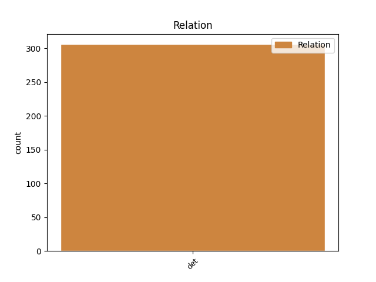
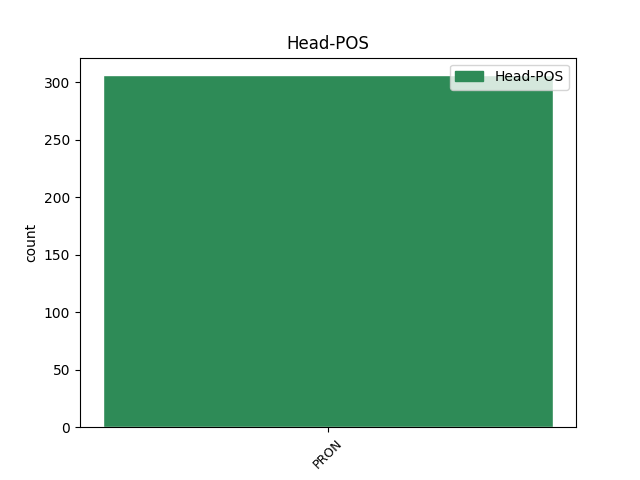
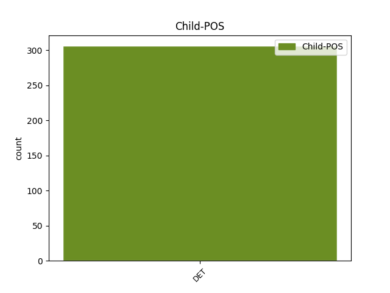

Distribution of features within this leaf



Agreement Rules sorted by frequency.
When the head token is PRON and the dependent token is DET.
1 καὶ _ _ _ _ 0 _ _ _
2 ἔδωκεν _ _ _ _ 0 _ _ _
3 ἡ _ _ _ _ 0 _ _ _
4 θάλασσα _ _ _ _ 0 _ _ _
5 τοὺς _ _ _ _ 0 _ _ _
6 νεκροὺς _ _ _ _ 0 _ _ _
7 τοὺς _ _ _ _ 0 _ _ _
8 ἐν _ _ _ _ 0 _ _ _
9 αὐτῇ _ _ _ _ 0 _ _ _
10 καὶ _ _ _ _ 0 _ _ _
11 ὁ _ _ _ _ 0 _ _ _
12 θάνατος _ _ _ _ 0 _ _ _
13 καὶ _ _ _ _ 0 _ _ _
14 ὁ _ _ _ _ 0 _ _ _
15 ᾅδης _ _ _ _ 0 _ _ _
16 ἔδωκαν _ _ _ _ 0 _ _ _
17 τοὺς _ _ _ _ 0 _ _ _
18 νεκροὺς _ _ _ _ 0 _ _ _
19 τοὺς ὁ DET S- Case=Acc|Definite=Def|Gender=Masc|Number=Plur|PronType=Dem 21 det _ ref=REV_20.13
20 ἐν _ _ _ _ 0 _ _ _
21 αὐτοῖς αὐτός PRON Pp Case=Dat|Gender=Masc|Number=Plur|Person=3|PronType=Prs 0 _ _ _
22 καὶ _ _ _ _ 0 _ _ _
23 ἐκρίθησαν _ _ _ _ 0 _ _ _
24 ἕκαστος _ _ _ _ 0 _ _ _
25 κατὰ _ _ _ _ 0 _ _ _
26 τὰ _ _ _ _ 0 _ _ _
27 ἔργα _ _ _ _ 0 _ _ _
28 αὐτῶν _ _ _ _ 0 _ _ _
Disagree Examples:
1 ἐν _ _ _ _ 0 _ _ _
2 τοῖσι _ _ _ _ 0 _ _ _
3 ἓν _ _ _ _ 0 _ _ _
4 τόδε _ _ _ _ 0 _ _ _
5 ἐστί _ _ _ _ 0 _ _ _
6 σκοπέειν _ _ _ _ 0 _ _ _
7 τινὰ _ _ _ _ 0 _ _ _
8 τὰ ὁ DET S- Case=Acc|Definite=Def|Gender=Neut|Number=Plur|PronType=Dem 9 det _ ref=1.8.4
9 ἑωυτοῦ ἑαυτοῦ PRON Pk Case=Gen|Gender=Masc|Number=Sing|Person=3|PronType=Prs|Reflex=Yes 0 _ _ _
1 τοῦτο _ _ _ _ 0 _ _ _
2 δὲ _ _ _ _ 0 _ _ _
3 τοῦ _ _ _ _ 0 _ _ _
4 βίου _ _ _ _ 0 _ _ _
5 εὖ _ _ _ _ 0 _ _ _
6 ἥκοντι _ _ _ _ 0 _ _ _
7 ὡς _ _ _ _ 0 _ _ _
8 τὰ ὁ DET S- Case=Nom|Definite=Def|Gender=Neut|Number=Plur|PronType=Dem 10 det _ ref=1.30.4
9 παρ’ _ _ _ _ 0 _ _ _
10 ἡμῖν ἡμεῖς PRON Pp Case=Dat|Gender=Masc|Number=Plur|Person=1|PronType=Prs 0 _ _ _
11 τελευτὴ _ _ _ _ 0 _ _ _
12 τοῦ _ _ _ _ 0 _ _ _
13 βίου _ _ _ _ 0 _ _ _
14 λαμπροτάτη _ _ _ _ 0 _ _ _
15 ἐπεγένετο _ _ _ _ 0 _ _ _
1 ταύτην _ _ _ _ 0 _ _ _
2 τὴν _ _ _ _ 0 _ _ _
3 γυναῖκα _ _ _ _ 0 _ _ _
4 σκευάσαντες _ _ _ _ 0 _ _ _
5 πανοπλίῃ _ _ _ _ 0 _ _ _
6 ἐς _ _ _ _ 0 _ _ _
7 ἅρμα _ _ _ _ 0 _ _ _
8 ἐσβιβάσαντες _ _ _ _ 0 _ _ _
9 καὶ _ _ _ _ 0 _ _ _
10 προδέξαντες _ _ _ _ 0 _ _ _
11 σχῆμα _ _ _ _ 0 _ _ _
12 οἷόν οἷος PRON Pr Case=Acc|Gender=Masc|Number=Sing|PronType=Rel 0 _ _ _
13 τι τὶς DET Px Case=Acc|Gender=Neut|Number=Sing 12 det _ ref=1.60.4
14 ἔμελλε _ _ _ _ 0 _ _ _
15 εὐπρεπέστατον _ _ _ _ 0 _ _ _
16 φανέεσθαι _ _ _ _ 0 _ _ _
17 ἔχουσα _ _ _ _ 0 _ _ _
18 ἤλαυνον _ _ _ _ 0 _ _ _
19 ἐς _ _ _ _ 0 _ _ _
20 τὸ _ _ _ _ 0 _ _ _
21 ἄστυ _ _ _ _ 0 _ _ _
22 προδρόμους _ _ _ _ 0 _ _ _
23 κήρυκας _ _ _ _ 0 _ _ _
24 προπέμψαντες _ _ _ _ 0 _ _ _
1 οἳ _ _ _ _ 0 _ _ _
2 δὲ _ _ _ _ 0 _ _ _
3 καταλαμβάνοντες _ _ _ _ 0 _ _ _
4 τοὺς _ _ _ _ 0 _ _ _
5 φεύγοντας _ _ _ _ 0 _ _ _
6 ἔλεγον _ _ _ _ 0 _ _ _
7 τὰ _ _ _ _ 0 _ _ _
8 ἐντεταλμένα _ _ _ _ 0 _ _ _
9 ὑπὸ _ _ _ _ 0 _ _ _
10 Πεισιστράτου _ _ _ _ 0 _ _ _
11 θαρσέειν _ _ _ _ 0 _ _ _
12 τε _ _ _ _ 0 _ _ _
13 κελεύοντες _ _ _ _ 0 _ _ _
14 καὶ _ _ _ _ 0 _ _ _
15 ἀπιέναι _ _ _ _ 0 _ _ _
16 ἕκαστον _ _ _ _ 0 _ _ _
17 ἐπὶ _ _ _ _ 0 _ _ _
18 τὰ ὁ DET S- Case=Acc|Definite=Def|Gender=Neut|Number=Plur|PronType=Dem 19 det _ ref=1.63.2
19 ἑωυτοῦ ἑαυτοῦ PRON Pk Case=Gen|Gender=Masc|Number=Sing|Person=3|PronType=Prs|Reflex=Yes 0 _ _ _
1 οἳ _ _ _ _ 0 _ _ _
2 δὲ _ _ _ _ 0 _ _ _
3 ταῦτα _ _ _ _ 0 _ _ _
4 πρὸς _ _ _ _ 0 _ _ _
5 Κυαξάρεω _ _ _ _ 0 _ _ _
6 παθόντες _ _ _ _ 0 _ _ _
7 ὥστε _ _ _ _ 0 _ _ _
8 ἀνάξια _ _ _ _ 0 _ _ _
9 σφέων σφεῖς PRON Pp Case=Gen|Gender=Masc|Number=Plur|Person=3|PronType=Prs 0 _ _ _
10 αὐτῶν αὐτός DET Pd Case=Gen|Gender=Masc,Neut|Number=Plur 9 det _ ref=1.73.5
11 πεπονθότες _ _ _ _ 0 _ _ _
12 ἐβούλευσαν _ _ _ _ 0 _ _ _
13 τῶν _ _ _ _ 0 _ _ _
14 παρὰ _ _ _ _ 0 _ _ _
15 σφίσι _ _ _ _ 0 _ _ _
16 διδασκομένων _ _ _ _ 0 _ _ _
17 παίδων _ _ _ _ 0 _ _ _
18 ἕνα _ _ _ _ 0 _ _ _
19 κατακόψαι _ _ _ _ 0 _ _ _
20 σκευάσαντες _ _ _ _ 0 _ _ _
21 δὲ _ _ _ _ 0 _ _ _
22 αὐτὸν _ _ _ _ 0 _ _ _
23 ὥσπερ _ _ _ _ 0 _ _ _
24 ἐώθεσαν _ _ _ _ 0 _ _ _
25 καὶ _ _ _ _ 0 _ _ _
26 τὰ _ _ _ _ 0 _ _ _
27 θηρία _ _ _ _ 0 _ _ _
28 σκευάζειν _ _ _ _ 0 _ _ _
29 Κυαξάρῃ _ _ _ _ 0 _ _ _
30 δοῦναι _ _ _ _ 0 _ _ _
31 φέροντες _ _ _ _ 0 _ _ _
32 ὡς _ _ _ _ 0 _ _ _
33 ἄγρην _ _ _ _ 0 _ _ _
34 δῆθεν _ _ _ _ 0 _ _ _
35 δόντες _ _ _ _ 0 _ _ _
36 δὲ _ _ _ _ 0 _ _ _
37 τὴν _ _ _ _ 0 _ _ _
38 ταχίστην _ _ _ _ 0 _ _ _
39 κομίζεσθαι _ _ _ _ 0 _ _ _
40 παρὰ _ _ _ _ 0 _ _ _
41 Ἀλυάττεα _ _ _ _ 0 _ _ _
42 τὸν _ _ _ _ 0 _ _ _
43 Σαδυάττεω _ _ _ _ 0 _ _ _
44 ἐς _ _ _ _ 0 _ _ _
45 Σάρδις _ _ _ _ 0 _ _ _